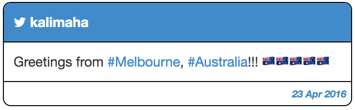

DIY Twitter with Redis and Ruby on Rails
Redis is a key-value in-memory database that was initially released in 2009, and since then it gained great popularity. This kind of DB is mainly used for real time analysis, counting and sorting problems, pub/sub, queues and caching. In 2014, Salvatore Sanfilippo (the creator of Redis, a.k.a. antirez) published a very interesting post where he describes the design and implementation of a Twitter clone based on Redis. This article shows how Redis goes beyond the aforementioned use cases and how it could be used as the primary data storage for an application. The original article is intended to be a tutorial for newbies, so I will use it to learn and practice with Redis. However, I will use Ruby on Rails (instead of PHP) to implement the final web application. By doing so, I will have the opportunity to approach a new technology and also to explore a new scenario with Ruby on Rails. The application has been named R3Twitter after the technologies involved: Redis, Ruby and Rails.
Resources
The source code is available on GitHub, so please consider to watch, fork or star it! The following table contains the links to all the resources available for this project.
| Resource | Host |
|---|---|
| Source Code | GitHub |
| Live Demo | Heroku |
| CI | TravisCi |
| Tests Coverage | Coveralls |
The brain: Redis
Antirez’s post provides a detailed overview of Redis commands and also explains more in depth the design of the application, so for more details please refer to the original post.
Unique IDs
Redis provides the INCR command, an atomic operator used to increment a
counter in a concurrent environment. This means that when multiple clients try
to modify the same variable at the same time, this will be protected by
simultaneous accesses for the time required for the update, keeping the value
of the variable consistent. R3Twitter requires two entities: users and
tweets, therefore we need two different counters. The user_id counter can
be simply generated as follows:
INCR user_id
Such counter can be retrieved at any time:
GET user_id
The same concepts can be obviously applied for tweet_id.
Users and Tweets
Once the mechanism required to generate unique IDs is in place, it is possible
to store both the users and the tweets. HMSET is the Redis way to associate a
key (e.g. user_id or tweet_id) to an object in the DB. The user having
user_id "42" can be stored in the DB as follows:
HMSET user:42 username "kalimaha" password "12345678"
Similarly, a tweet posted by the previous user having tweet_id "1982" will
be saved like this:
HMSET tweet:1982 user "42" time "1460935326" body "Hello, World!"
For login purposes, it is also required to keep track of the mapping between the username and its internal ID. The set named users will hold such relationship:
HSET users "kalimaha" "42"
The login process can be charted as follows:
Followers
Each user has a list of followers, and a list of followings. The first list
will be used to update other users timelines, while the latter can be used to
keep track of the user’s network. Such lists can be implemented either as a set
or as an ordered set. We will use the latter to keep track of the changes of
the two networks over time. ZADD allows you to create an ordered list through
the use of a score, which is a value that defines the priority of an item over
another. The followers list can be created using a timestamp as the score value
as follows:
ZADD followers:42 "1460935326" "27"
Where "1460935326" is the score and "27" is the hypothetical ID of another user (a follower). In case we decide to follow "27" back, we need to update the following list as well:
ZADD following:27 "1460935326" "42"
Timeline
The timeline of an user is simply a list of tweets made by the people the user
is currently following. To add a tweet to the user’s timeline we will use
LPUSH, which adds an item at the top of a list:
LPUSH timeline:42 "1982"
The tweet having tweet_id "42" has been added to the author’s timeline
because usually the Twitter timeline also shows your own updates. To retrieve
the list of tweets, simply execute:
LRANGE timeline:42 0 -1
The two parameters at the end, 0 and -1, define the starting and ending point of the list’s portion we are retrieving, and these can be used to paginate the query’s result (e.g. show the latest 100 tweets only).
The muscle: Ruby on Rails
Ruby on Rails (RoR) is a web framework based on
the Ruby programming language, it follows the MVC (Model-View-Controller)
pattern, and it is heavily centered on the resources and the CRUD operations
that it is possible to perform on them. This project is based on Redis,
which is a key-value DB, so we can’t really map our resources on RoR models,
therefore we need to find another way to manage our simple models: user and
tweet. The first thing to do then is to get rid of the
Active Record
feature of RoR. To do so, we need to specify the -O option during the project
creation:
rails new R3Twitter -O
It is also possible to remove the Active Record in a later stage, but it’s much better to start with the right foot, trust me! The project has no models, and we will organize the back-end in controllers, which deal with the communication with the views, and helpers, which encapsulate the communication with the DB.
Communicate with Redis: helpers
Helpers are Ruby modules that can be imported in the controllers. In the
current structure of the projects there are three different _helper modules:
application, user and tweet. The application_helper implements the
business logic required to open a connection with the DB, and it also contains
all the methods of general utility:
module ApplicationHelper
attr_reader :redis
@redis = nil
def init_redis
@redis = Redis.new(:host => Rails.configuration.x.redis.host,
:port => Rails.configuration.x.redis.port,
:password => Rails.configuration.x.redis.password) if @redis == nil
end
# Empty the DB. This method is used in the testing environment.
def flushdb
keys = @redis.keys('*')
@redis.del(*keys) unless keys.empty?
'OK'
end
end
Both the user_helper and the tweet_helper extend the application_helper
in order to use the connector that access the DB. Each helper then contains the
methods required to manage users and tweets at the Redis level
(e.g. generate unique ID’s, create a user, retrieve tweets, and so forth).
Communicate with users: controllers
Controllers are in charge of collecting the parameters from the views, process
the business logic, and render the views. Once again there are three different
controller: the application_controller is in charge of initializing the
helpers, while user and tweet controller implement the business logic for
our models. The application_controller is as simple as:
class ApplicationController < ActionController::Base
protect_from_forgery with: :exception
before_action :initialize_helper
skip_before_filter :verify_authenticity_token
def initialize_helper
init_redis
end
end
Deploy on Heroku
To deploy on Heroku, we need to provide a configuration file, install Redis, and configure the app to work with the cloud DB.
Procfile
The first step we need to take to deploy our project on Heroku is a
Procfile stored in the project’s root. Such file is plain simple:
web: bundle exec rails server -p $PORT
Add Redis
After that, we need to change the default Heroku DB, from PostgreSQL to Redis. To do so, create an app in Heroku, then remove the PostgreSQL service from Resources / Add-ons. Then, in the same section, search and select Heroku Redis.
Different settings for different environments
During the development and testing phase it is possible to use the Redis instance running in localhost. However, for the production environment we need to connect the application to the Redis instance running in the Heroku cloud. To do so, we are required to specify the host, the port and the password. To acquire such information I will use the Heroku CLI:
heroku config:get REDIS_URL --app r3twitter
The result is in the form:
redis://h:<PASSWORD>@<HOST>:<PORT>
RoR come with three different environment (development, production and
testing), and each one of these environments has its own configuration file
located at config/environments. We need to add the Redis settings at the end
of each one of these files. For example, the development.rd file will look
like:
Rails.application.configure do
# Other stuff
...
# Rails instance
config.x.redis.host = 'localhost'
config.x.redis.port = 6379
config.x.redis.password = nil
end
These settings are used in the init method of the aforementioned
application_helper file:
def init_redis
@redis = Redis.new(:host => Rails.configuration.x.redis.host,
:port => Rails.configuration.x.redis.port,
:password => Rails.configuration.x.redis.password) if @redis == nil
end
Deploy
We are almost there! Now we just need to connect the Heroku app to the GitHub repository and deploy it. All these operations can be performed through the web interface. Et voilá, we can finally tweet our first message! 
Continuous integration
We can easily link our GitHub project to the continuous integration platform
TravisCI. To do so, we just need a .travis.yml file in the project’s root.
The file is as simple as:
language: ruby
rvm:
- 2.2
services:
- redis-server
script:
- bundle exec rake test
bundler_args: --binstubs=./bundler_stubs
after_success:
- coveralls
Conclusions
This post, based on an article by Salvatore Sanfilippo, describes how to implement a simple Twitter clone built with Ruby on Rails using Redis as the main DB. The data structure has been easily implemented in Redis with very few functions. RoR has been used to implement the web app by removing the default Active Record feature and mapping the Redis functionalities by means of Ruby modules. Finally, the app has been deployed on Heroku, removing the default PostgreSQL storage and installing the Redis DB.